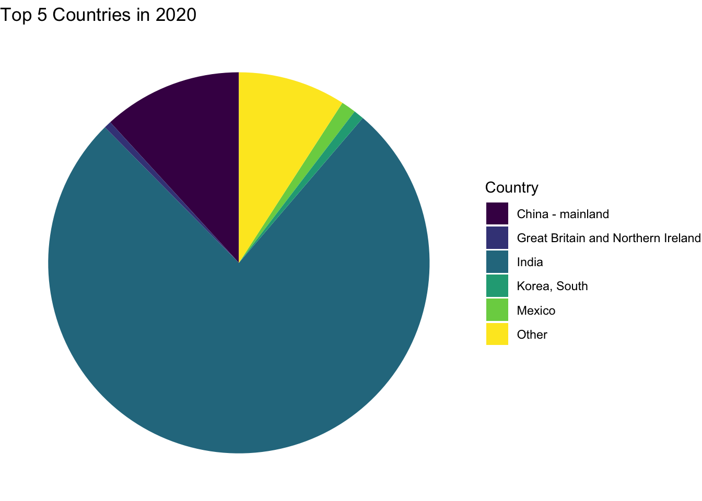
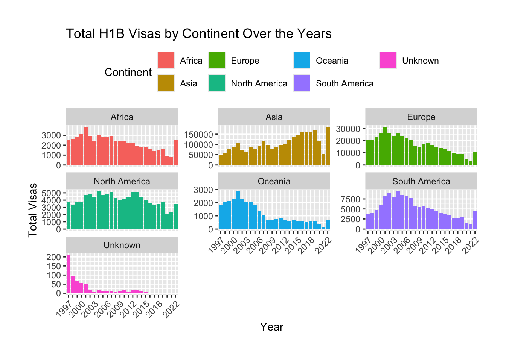
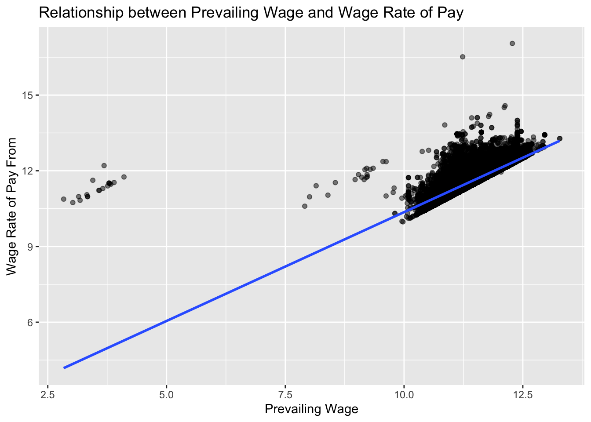
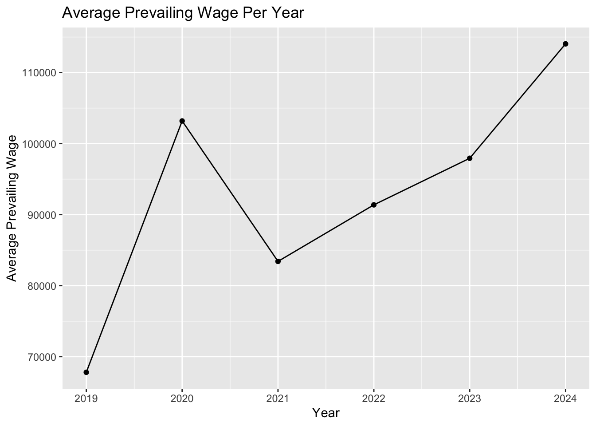
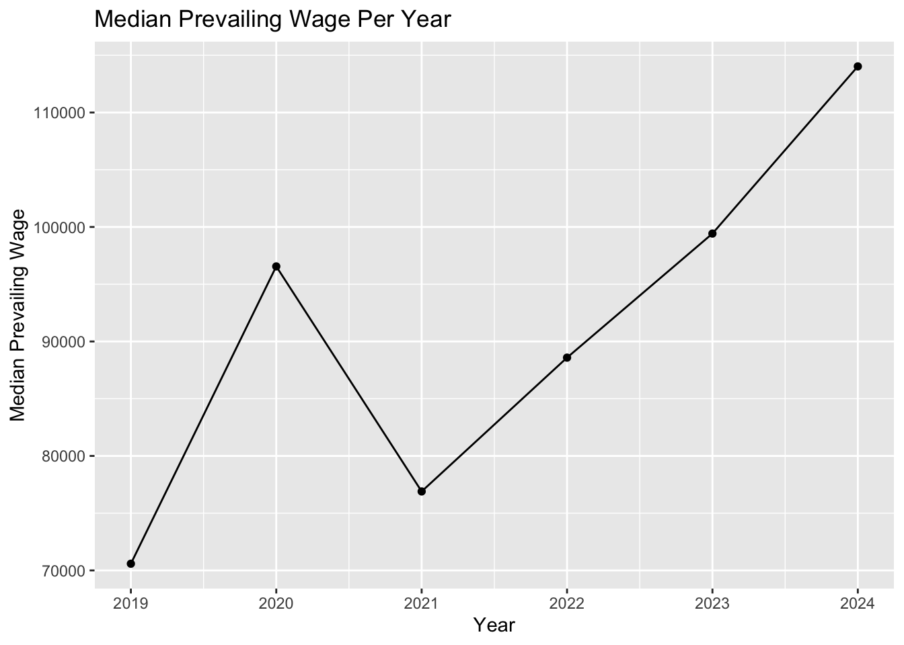

We describe the sources of our data and the cleaning process.
This comes from the file data.qmd.
Your first steps in this project will be to find data to work on.
I recommend trying to find data that interests you and that you are knowledgeable about. A bad example would be if you have no interest in video games but your data set is about video games. I also recommend finding data that is related to current events, social justice, and other areas that have an impact.
Initially, you will study one dataset but later you will need to combine that data with another dataset. For this reason, I recommend finding data that has some date and/or location components. These types of data are conducive to interesting visualizations and analysis and you can also combine this data with other data that also has a date or location variable. Data from the census, weather data, economic data, are all relatively easy to combine with other data with time/location components.
What makes a good data set?
Data you are interested in and care about.
Data where there are a lot of potential questions that you can explore.
A data set that isn’t completely cleaned already.
Multiple sources for data that you can combine.
Some type of time and/or location component.
Where to keep data?
Below 50mb: In dataset folder
Above 50mb: In dataset_ignore folder. This folder will be ignored by git so you’ll have to manually sync these files across your team.
Sharing your data
For small datasets (<50mb), you can use the dataset folder that is tracked by github. Add the files just like you would any other file.
If you create a folder named data this will cause problems.
For larger datasets, you’ll need to create a new folder in the project root directory named dataset-ignore. This will be ignored by git (based off the .gitignore file in the project root directory) which will help you avoid issues with Github’s size limits. Your team will have to manually make sure the data files in dataset-ignore are synced across team members.
You should never use absolute paths (eg. /Users/danielsussman/path/to/project/ or C:\MA415\\Final_Project\).
You might consider using the here function from the here package to avoid path problems.
Load and clean data script
The idea behind this file is that someone coming to your website could largely replicate your analyses after running this script on the original data sets to clean them. This file might create a derivative data set that you then use for your subsequent analysis. Note that you don’t need to run this script from every post/page. Instead, you can load in the results of this script, which could be plain text files or .RData files. In your data page you’ll describe how these results were created. If you have a very large data set, you might save smaller data sets that you can use for exploration purposes. To link to this file, you can use [cleaning script](/scripts/load_and_clean_data.R) wich appears as cleaning script.
Rubric: On this page
You will
Describe where/how to find data.
You must include a link to the original data source(s). Make sure to provide attribution to those who collected the data.
Why was the data collected/curated? Who put it together? (This is important, if you don’t know why it was collected then that might not be a good dataset to look at.
Describe the different data files used and what each variable means.
If you have many variables then only describe the most relevant ones and summarize the rest.
Describe any cleaning you had to do for your data.
You must include a link to your load_and_clean_data.R file.
Rrename variables and recode factors to make data more clear.
Also, describe any additional R packages you used outside of those covered in class.
Describe and show code for how you combined multiple data files and any cleaning that was necessary for that.
Some repetition of what you do in your load_and_clean_data.R file is fine and encouraged if it helps explain what you did.
Organization, clarity, cleanliness of the page
Make sure to remove excessive warnings, use clean easy-to-read code (without side scrolling), organize with sections, use bullets and other organization tools, etc.
Our first dataset is downloaded from the travel.state.gov website and stored in the dataset folder. The data was collected by U.S Department of State, more specifically the Bureau of Consular Affairs.
The Report of the Visa Office is an annual report providing statistical information on immigrant and non-immigrant visa issuance by consular offices, including information visa allocation in numerically limited categories. The main part of this dataset we want to focus on is the country of origin of visa recipients for H1B-type visas. Years covered range from Fiscal Year 1997 to F.Y. 2022 inclusively.
The original dataset comes with the following features/columns
country: origin of country
H1B: H1B approval count
FY97 - FY22: represent year 1997 till 2022
Essentially, this dataset contains information of H1B approval from year 1997 till 2022 and its originate country.
First Dataset Background
The original dataset is in dataset directory as .xlsx file. It contains pivot tables for each year that describe various U.S travel approvals such as H1B. To transform the dataset into the current one, we did the following operation
read in excel files
filter out null values(continents, .., etc)
group country
filter out other columns and keep H1B column
create columns for each year (1977-2022)
The script to transform the dataset is in scripts directory load_and_clean_data.R file.
This is an example of how to load our cleaned dataset from dataset directory:
The following code shortens the dimension of our dataframe to 3 columns specially the years columns. Having many years column can make the dataset hard to analysis or explore.
Warning: There was 1 warning in `summarize()`.
ℹ In argument: `across(everything(), sum, na.rm = TRUE)`.
ℹ In group 1: `Continent = "Africa"`.
Caused by warning:
! The `...` argument of `across()` is deprecated as of dplyr 1.1.0.
Supply arguments directly to `.fns` through an anonymous function instead.
# Previously
across(a:b, mean, na.rm = TRUE)
# Now
across(a:b, \(x) mean(x, na.rm = TRUE))
# A tibble: 6 × 3
Continent year count_h1b
<chr> <chr> <dbl>
1 Africa 1997 2518
2 Africa 1998 2634
3 Africa 1999 2835
4 Africa 2000 3126
5 Africa 2001 3808
6 Africa 2002 2903
# Sample data manipulation assuming h1b_country is your dataseth1b_country_temp <- h1b_country %>%select(-Continent)# Convert the data from wide to long formatdata_long_all <-pivot_longer( h1b_country_temp, cols =-Country, names_to ="year", values_to ="count_h1b")# Filter for only recent years 2022, 2021, 2020, etc.years_of_interest <-c("2022", "2021", "2020", "2019", "2018")data_filtered <- data_long_all %>%filter(year %in% years_of_interest)# Initialize an empty list to store the pie chartspiecharts_all <-list()# Loop only over the filtered yearsfor (year_iter in years_of_interest) {print(year_iter) all_temp <- data_filtered %>%filter(year == year_iter)# Select the top 5 countries based on the count top_countries <- all_temp %>%group_by(Country) %>%summarise(total_count =sum(count_h1b), .groups ="drop") %>%arrange(desc(total_count)) %>%slice_max(order_by = total_count, n =5) # Updated to use slice_max# Summarise the rest as 'Other' other_countries <- all_temp %>%anti_join(top_countries, by ="Country") %>%filter(!is.na(count_h1b)) %>%summarise(Country ="Other", total_count =sum(count_h1b), .groups ="drop")# Combine the top countries and 'Other' combined_data <-bind_rows(top_countries, other_countries)# Assuming combined_data is your data frame with the top 5 countries and 'Other'# Load necessary librarieslibrary(ggplot2)library(dplyr)# Create a pie chart using ggplot2pie_chart <-ggplot(combined_data, aes(x ="", y = total_count, fill = Country)) +geom_bar(width =1, stat ="identity") +coord_polar("y", start =0) +theme_void() +theme(legend.position ="right") +scale_fill_viridis_d() +labs(title =paste("Top 5 Countries in", year_iter))# Store the pie chart in the list piecharts_all[[year_iter]] <- pie_chart}
# Print all pie charts stored in the listprint(piecharts_all)
$`2022`
$`2021`
$`2020`

$`2019`
$`2018`
ggplot(data_long, aes(x = year, y = count_h1b, fill = Continent)) +geom_bar(stat ="identity", position ="stack") +labs(title ="Total Values by Continent Over the Years",x ="Year", y ="Total Value") +theme(legend.position ="top",axis.text.x =element_text(angle =45, hjust =1))
ggplot(data_long, aes(x = year, y = count_h1b, fill = Continent)) +geom_bar(stat ="identity", position ="stack") +facet_wrap(~Continent, scales='free_y') +labs(title ="Total Values by Continent Over the Years",x ="Year", y ="Total Value") +theme(legend.position ="top",axis.text.x =element_text(angle =45, hjust =1)) +scale_x_discrete(guide=guide_axis(check.overlap=TRUE))
# Rename year columnsyears <-paste0(1997:2022)colnames(h1b_country) <-c('Country', 'Continent', years)# Summarize total H1B visas per year and transform into long format for plottingtotal_h1b_by_year_long <- h1b_country %>%select(all_of(years)) %>%summarise(across(everything(), sum, na.rm =TRUE)) %>%pivot_longer(cols =everything(), names_to ="year", values_to ="Total_H1B_Visas")# Plot total H1B visas issued worldwide over the yearsggplot(total_h1b_by_year_long, aes(x = year, y = Total_H1B_Visas, fill = year)) +geom_bar(stat ="identity") +scale_fill_viridis_d() +labs(title ="Total H1B Visas Issued Worldwide Over the Years",x ="Year", y ="Total Number of H1B Visas") +theme(axis.text.x =element_text(angle =45, vjust =1, hjust =1), legend.position ="none")
# Summarize data by continent and transform into long formatdata_long <- h1b_country %>%group_by(Continent) %>%summarise(across(all_of(years), sum, na.rm =TRUE)) %>%pivot_longer(cols =all_of(years), names_to ="year", values_to ="count_h1b")# Plot total values by continent over the yearsggplot(data_long, aes(x = year, y = count_h1b, fill = Continent)) +geom_bar(stat ="identity") +facet_wrap(~Continent, scales="free_y") +scale_x_discrete(guide =guide_axis(check.overlap =TRUE)) +labs(title ="Total H1B Visas by Continent Over the Years",x ="Year", y ="Total Visas") +theme(legend.position ="top", axis.text.x =element_text(angle =45, hjust =1),plot.margin =unit(c(1, 1, 1, 1), "cm"))

Explanation
While this dataset tells us about the country of origin of visa recipients for H1B-type visas. We believe that dataset 3 allows us to have a deeper understanding of the recent years and employment
Dataset 3
Background
Since there exist many columns, we will list a few important columns.
CASE_NUMBER: Unique identifier assigned to each application submitted for processing to OFLC.
CASE_STATUS: decision on application. Once certified, employer can proceed with next steps of the visa process to get VISAs for foreign worker
FULL_TIME_POSITION: Y for getting fulltime and N for not getting
TOTAL_WORKER_POSITIONS: Total number of foreign workers requested by employers
EMPLOYER_NAME: Business name
PREVAILING_WAGE: average wage based on labor market
WAGE_RATE_OF_PAY_FROM: wage paid at the site
WORKSITE_CITY: City of the worksite
AGENT_REPRESENTING_EMPLOYER: employer represented by agent or attorney, Y or N
RECEIVED_DATE: Date the application received by OFLC
We downloaded LCA Programs H-1B and PERM disclosure data
The data is made available as part of a broader government initiative toward transparency and open governance. This initiative aims to make government operations more accessible and understandable to the public.
By providing access to historical and current data about immigration-related labor applications, the dataset aids in understand trends, evaluate the effectiveness of current policies, and plan future actions based on solid data.
A couple of ideas we can draw from this dataset are…
provide insights into the labor market
immigration trends
impacts on the economy
The data includes information like case numbers, decision dates, and other metadata which are extracted from applications processed by the OFLC(Office of Foreign Labor Certification). This also includes newly added fields from updated visa application forms and systems, making the data more comprehensive over time. However, this dataset did not include personal or other case details due to privacy and integrity.
Overall, this dataset is a critical resource for enhancing understanding and facilitating a data-driven approach to managing and legislating foreign labor and immigration-related activities.
How it was collected?
Recall that the dataset was provided by OFLC(Office of Foreign Labor Certification).
Employers who are seeking to hire foreign workers must submit various forms of applications for prevailing wage determinations, labor certifications, and labor attestations. These applications are required for different visa programs, such as H-1B, H-2A, H-2B, and permanent residency applications. Our goal is focus on H-1B but not limited to explore other programs.
Why it is worth exploring?
Because our groups are interested in the labor market in U.S specifically in foreign labors. This dataset allows us to analyze the labor market dynamics related to foreign labor in the U.S. You can track trends in wages, understand the demand for labor in specific sectors, and assess how immigration policies impact the economy. This kind of analysis is crucial for crafting informed labor and economic policies.
Our contribution
Here, we will look into two related datasets, both from the same source.
PERM_disclosure_data: A system used by the U.S Department of Labor to process labor certifications, which is the first step required in the process for certain foreign nationals to obtain an employment-based immigrant visa, or green card. The PERM disclosure data typically includes information about applications submitted by employers who wish to hire foreign workers permanently. This data can provide insights into which companies are applying for labor certifications, the positions they are looking to fill, the salaries offered, the status of applications (whether they were certified, denied, or withdrawn), and other relevant details.
LCA_Program_data: LCA stands for Labor Condition Application. This application is a component of the H1B visa process, where employers in the U.S. must attest to the Department of Labor that they will pay the H1B visa holder a wage that is no less than the wage paid to similarly qualified U.S. workers. It also ensures that employing a foreign worker will not adversely affect the working conditions of U.S. workers similarly employed. The LCA Program H1B data contains information regarding these applications, including details about the employers filing them, the positions for which they are filed, wage levels, locations of employment, and the status of these applications.
Our direction is to start initial progress on LCA_Program_data to testify if H1B visa holder has a wage similar to qualified U.S. workers. Then, we will shift to perm_disclosure_data which is the where the main analysis is done.
Cleaning Dataset
The following steps would be describing how we load our dataset and merge additional columns.
We selected this dataset, updated in 2024, because it comprehensively represents the evolution of U.S. immigration policy from the Trump to the Biden administration. It provides a wealth of columns suitable for statistical modeling. To enrich our analysis, we plan to merge it with two other datasets. The first includes information on the applicants’ universities and majors, while the second contains data on their incomes, allowing us to construct a linear regression model. Once merged, we will have a dataframe with approximately 30+ columns.
This is the line of code of how to read xlsx files and convert into rds. We commented out after done. Afterward, we can load in rds files and merge the columns
# rds for the other two projects# df2 <- read_excel("dataset/worksite.xlsx")# saveRDS(df2, "dataset/LCA_worksite.rds")# df3 <- read_excel("dataset/appendix.xlsx")# saveRDS(df3, "dataset/LCA_appendix.rds")
# read in df2df2 <-readRDS("dataset/LCA_worksite.rds")head(df2)
# read in df3df3 <-readRDS("dataset/appendix.rds")head(df3)
# A tibble: 6 × 5
CASE_NUMBER APPX_A_NO_OF_EXEMPT_WORKERS APPX_A_NAME_OF_INSTITUTION
<chr> <dbl> <chr>
1 I-200-20353-968632 1 The William Paterson Universit…
2 I-200-21116-258512 1 GOVERNORS STATE UNIVERISTY
3 I-200-22115-102220 1 Lamar University
4 I-200-22126-145447 1 California State University, L…
5 I-200-22164-272276 1 Illinois Institute of Technolo…
6 I-200-22180-320955 1 University of Missouri
# ℹ 2 more variables: APPX_A_FIELD_OF_STUDY <chr>, APPX_A_DATE_OF_DEGREE <dttm>
To merge the dataset together, we can find matching case numbers. The additional dataset gives additional information about applicants university, field of major, date of degree etc…
Here we commented it out since the dataset has already been merged.
# merge df1 and df2 by case number# merge_1 <- merge(df, df2, by="CASE_NUMBER", all = TRUE)
# final_merge <- merge(merge_1, df3, by="CASE_NUMBER", all = TRUE)
# save as new rds for final_merge# saveRDS(final_merge, "dataset/final_merge.rds")
CASE_NUMBER CASE_STATUS RECEIVED_DATE DECISION_DATE
1 I-200-19297-106681 Certified - Withdrawn 2019-10-24 2023-11-01
2 I-200-19319-148860 Certified - Withdrawn 2019-11-15 2023-10-20
3 I-200-19319-148860 Certified - Withdrawn 2019-11-15 2023-10-20
4 I-200-19319-148860 Certified - Withdrawn 2019-11-15 2023-10-20
5 I-200-19319-149308 Certified - Withdrawn 2019-11-15 2023-10-05
6 I-200-19323-154281 Certified - Withdrawn 2019-11-19 2023-10-02
VISA_CLASS JOB_TITLE FULL_TIME_POSITION BEGIN_DATE END_DATE
1 H-1B Research Scientist I Y 2019-10-24 2022-10-23
2 H-1B Software Developer Y 2019-12-01 2022-11-30
3 H-1B Software Developer Y 2019-12-01 2022-11-30
4 H-1B Software Developer Y 2019-12-01 2022-11-30
5 H-1B Software Developer Y 2019-11-18 2022-11-17
6 H-1B SENIOR SOFTWARE ENGINEER Y 2020-05-16 2023-05-15
EMPLOYER_NAME EMPLOYER_STATE AGENT_REPRESENTING_EMPLOYER
1 Georgia Institute of Technology GA No
2 TRISHULLA, LLC WI Yes
3 TRISHULLA, LLC WI Yes
4 TRISHULLA, LLC WI Yes
5 INTERNATIONAL SOFTWARE SYSTEMS INC MD No
6 UBER TECHNOLOGIES, INC. CA Yes
WORKSITE_WORKERS SECONDARY_ENTITY SECONDARY_ENTITY_BUSINESS_NAME
1 1 N <NA>
2 1 Y Acuity Eyecare Group
3 1 N <NA>
4 1 N <NA>
5 1 N <NA>
6 1 N <NA>
WORKSITE_ADDRESS1 WORKSITE_ADDRESS2 WORKSITE_CITY
1 313 Ferst Drive <NA> Atlanta
2 4835 Lyndon B Johnson Fwy, Suite 850 <NA> Dallas
3 6629 UNIVERSITY AVE, SUITE 210 <NA> MIDDLETON
4 8383 Greenway Blvd., Suite 600 <NA> Middleton
5 7337 Hanover Parkway Suite A Greenbelt
6 1455 MARKET STREET 4TH FLOOR SAN FRANCISCO
WORKSITE_COUNTY WORKSITE_STATE WORKSITE_POSTAL_CODE WAGE_RATE_OF_PAY_FROM
1 FULTON GEORGIA 30332 52100
2 DALLAS TEXAS 75244 77605
3 DANE WISCONSIN 53562 77605
4 DANE WISCONSIN 53562 77605
5 PRINCE GEORGE'S MARYLAND 20770 76000
6 SAN FRANCISCO CALIFORNIA 94103 202442
WAGE_RATE_OF_PAY_TO WAGE_UNIT_OF_PAY PREVAILING_WAGE PW_UNIT_OF_PAY
1 NA Year 46821 Year
2 77700 Year 77605 Year
3 77700 Year 65458 Year
4 77700 Year 65458 Year
5 NA Year 75712 Year
6 NA Year 168958 Year
PW_TRACKING_NUMBER PW_WAGE_LEVEL PW_OES_YEAR PW_OTHER_SOURCE
1 <NA> I 7/1/2019 - 6/30/2020 <NA>
2 <NA> I 7/1/2019 - 6/30/2020 <NA>
3 <NA> I 7/1/2019 - 6/30/2020 <NA>
4 <NA> I 7/1/2019 - 6/30/2020 <NA>
5 <NA> I 7/1/2019 - 6/30/2020 <NA>
6 <NA> IV 7/1/2019 - 6/30/2020 <NA>
PW_OTHER_YEAR PW_SURVEY_PUBLISHER PW_SURVEY_NAME APPX_A_NO_OF_EXEMPT_WORKERS
1 NA <NA> <NA> NA
2 NA <NA> <NA> NA
3 NA <NA> <NA> NA
4 NA <NA> <NA> NA
5 NA <NA> <NA> NA
6 NA <NA> <NA> NA
APPX_A_NAME_OF_INSTITUTION APPX_A_FIELD_OF_STUDY APPX_A_DATE_OF_DEGREE
1 <NA> <NA> <NA>
2 <NA> <NA> <NA>
3 <NA> <NA> <NA>
4 <NA> <NA> <NA>
5 <NA> <NA> <NA>
6 <NA> <NA> <NA>
# filter the dataset which jobs have most frequency and applicant get full time positionfiltered_data <- final_df |>filter(FULL_TIME_POSITION =="Y") |>count(JOB_TITLE, sort =TRUE) |>top_n(5)
# filter the dataset which jobs have most frequency and applicant get full time positionfiltered_data <- final_df |>count(EMPLOYER_NAME, sort =TRUE) |>top_n(5)
Selecting by n
print(filtered_data)
EMPLOYER_NAME n
1 Amazon.com Services LLC 3259
2 Ernst & Young U.S. LLP 2610
3 Google LLC 2325
4 Microsoft Corporation 2190
5 COGNIZANT TECHNOLOGY SOLUTIONS US CORP 1639
Next, we will plot the log scale of prevailing_wage and wage_rate_of_pay_from.
filtered_df <- final_df %>%filter( FULL_TIME_POSITION %in%c("Y", "N"),# some wage unit of pay is in hours. WAGE_UNIT_OF_PAY %in%c("Year")) |>select(WAGE_RATE_OF_PAY_FROM, PREVAILING_WAGE, WAGE_UNIT_OF_PAY)# Create a ggplot scatter plot with a linear regression lineggplot(filtered_df, aes(x =log(PREVAILING_WAGE), y =log(WAGE_RATE_OF_PAY_FROM) )) +geom_point(alpha =0.5) +# Adds scatter plot points with some transparencygeom_smooth(method ="lm", se =TRUE) +# Adds a linear regression line without the confidence intervallabs(x ="Prevailing Wage", y ="Wage Rate of Pay From", title ="Relationship between Prevailing Wage and Wage Rate of Pay")
`geom_smooth()` using formula = 'y ~ x'

We can see there there exist linear relationship between Prevailing wage and wage paid at worksite. To recall, prevailing wage is the average wage paid according to the labor market. It would be a surprise if foreign workers are paid less than their peers.
# Identify states with high number of applicants or high approval ratesstate_df <- final_dfstate_df <-na.omit(state_df[c("EMPLOYER_STATE", "CASE_STATUS")])state_data <- state_df |>group_by(EMPLOYER_STATE) |>summarise(Total_Applications =n(),Approved_Applications =sum(CASE_STATUS =="Approved") )
# visualizing# Sort by total applicationsstate_data_sorted_applicants <- state_data %>%arrange(desc(Total_Applications))top_states <- state_data_sorted_applicants |>top_n(20, Total_Applications)# Plot for Total Applicationsggplot(top_states, aes(x =reorder(EMPLOYER_STATE, -Total_Applications), y = Total_Applications)) +geom_bar(stat ="identity", fill ="GREY") +theme(axis.text.y =element_text(size =6)) +# Smaller text size for stateslabs(title ="Total Visa Applications by State", x ="State", y ="Number of Applications") +coord_flip() # Flips the coordinates to make labels readable

Top 20 states where received the highest number of visa applications. In other word, these are the states that hire and submit applications for foreign workers the most (up to date 2024). From previous exploration, we learned that majority of the job titles are tech related jobs, and majority of tech companies still hiring located in these states.
yearly_wage <- final_df %>%group_by(YEAR_BEGIN) %>%summarise(Avg_Prevailing_Wage =mean(PREVAILING_WAGE, na.rm =TRUE))ggplot(yearly_wage, aes(x = YEAR_BEGIN, y = Avg_Prevailing_Wage)) +geom_line() +# Use a line plot to show trends over timegeom_point() +# Add points to highlight each year's average wagelabs(title ="Average Prevailing Wage Per Year",x ="Year",y ="Average Prevailing Wage")
Average prevailing wage might not be a good choice since tech jobs would skew the average. We would take a look at the medians.
yearly_wage <- final_df %>%group_by(YEAR_BEGIN) %>%summarise(median_Prevailing_Wage =median(PREVAILING_WAGE, na.rm =TRUE))ggplot(yearly_wage, aes(x = YEAR_BEGIN, y = median_Prevailing_Wage)) +geom_line() +# Use a line plot to show trends over timegeom_point() +# Add points to highlight each year's average wagelabs(title ="Median Prevailing Wage Per Year",x ="Year",y ="Median Prevailing Wage")

Biden becomes president at year 2020. A sudden drop in wages happen in year 2021 due to covid19. Afterward, the trends goes right back up.
PERM_DISCLOSURE_DATA
To recall, the first step required in the process for certain foreign nationals to obtain an employment-based immigrant visa, or green card is in PERM_DISCLOSURE_DATA It contains information about applications submitted by employers who wish to hire foreign workers permanently. This data can provide insights into which companies are applying for labor certifications, the positions they are looking to fill, the salaries offered, the status of applications (whether they were certified, denied, or withdrawn), and other relevant details.
Here, we will load in the data and do basic inspection of the data. Acknowledging that this dataset contains many columns. We can create a separate df that contains columns we believe is important.
Note that PERM_DISCLOSURE_DATA is almost the identical as LCA_Program data but PERM_DISCLOSURE_DATA contains more columns which you can select various columns depend on your needs.